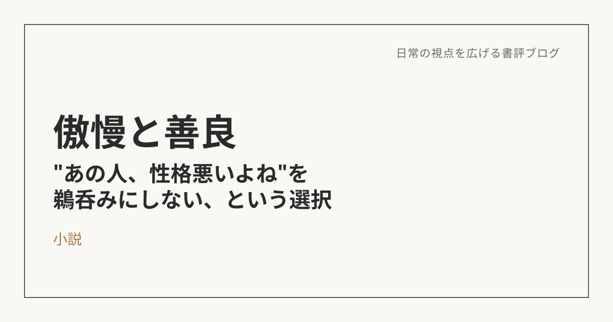

傲慢と善良――"あの人、性格悪いよね"を鵜呑みにしない、という選択
この本について
辻村深月による本作は、婚活で出会った女性・真実（まみ）が、結婚式を目前に失踪するところから始まる。婚約者の架（かける）が彼女の足取りを追いかけるうちに、まみという一人の人間の意外な顔や、婚活という場が映し出す「普通」への執着、そして架自身の中にある「傲慢さ」があぶり出されていく――そんな物語。
言葉は、しょせん誰かのフィルター
読んでいちばん引っかかったのは、ストーリーそのものより「人を一言で言い表す言葉」への不信感だった。
"あの人、性格悪いよね"
職場や友人関係で、こういう一言を耳にしたことは一度や二度じゃないはずだ。そして気づけば、自分もその「一言」をそのまま信じてしまっている。
「傲慢」も「善良」も、突き詰めれば誰かがそう感じただけの、主観的で断片的な言葉にすぎない。「優しい」「厳しい」「正直」「嘘つき」「いい人」「悪い人」――人を評するあらゆる言葉に当てはまる。「世界は主観でできている」とよく言うけれど、まさにその通りだと思う。誰かが誰かをそう感じたこと自体に嘘はない。でもそれは、感じた人の認識や価値観、これまでの生き方によっていくらでも形を変える。言葉で人を切り取った瞬間に、その人の多面性はもうこぼれ落ちている。
同じ人物が、正反対に見える
物語の中でも、まさにこれが起きている。かける（婚約者）について、ある人からは「善良で素直だ」と聞き、別の人からは「傲慢なやつだ」と聞く。まみについても同様に、聞く相手が変われば印象がまるで違う。同じ一人の人間なのに、語る人が変わるだけで、別人のような評価になってしまう。
言葉が発した人のフィルターを通っている以上、当然と言えば当然だ。でも、物語の中でそれを目の当たりにすると、自分がいかに「誰かの評価」をそのまま真に受けてしまっているかに気づかされる。そしてこれは、自分の中だけで気をつければいい話でもない。誰かが誰かを一方的に評しているのを見たときは、「それは、その人から見えた景色でしかないよ」と、まわりにも伝えられる人でありたいと思う。
じゃあ、どう向き合う？
身近な人が「あの人は◯◯だ」と誰かを評していたとする。そのとき最初にすべきなのは、それをそのまま信じないと自覚することだ。なぜそう感じたのかを事実として聞いた上で、なるべく客観的に判断する。人づての話には限界があるから、自分が直接その人と接して確かめられるまでは、あくまで一つの意見として参考程度にとどめておく。
結局、いちばん頼りになるのは「自分が実際に感じたこと・話したこと・体験したこと」という一次情報だ。言葉はそれを発する人のフィルターがかかったものでしかない。
そして、自分が感じたことも、他人にとっての事実にはならない。だからこそ次に誰かを一言で評したくなったとき、一度だけ立ち止まってみてほしい。その言葉は、本当に「事実」だろうか。それとも、誰かのフィルターを、そのまま借りているだけだろうか。
※本記事はNotionに書き溜めた読書メモをもとに、AIの編集サポートを受けて構成しています。